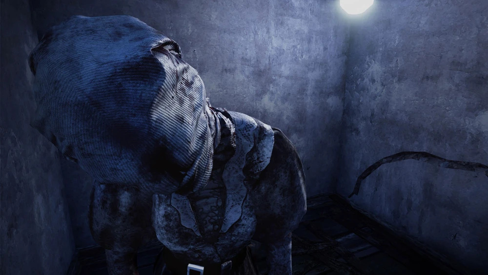

A Enfermeira
- Nome: Sally Smithson
- Genero: Feminino
- Origem: Descendente de ingleses
- Poder: Último Suspiro de Spencer
- Tipo do Ataque do Poder Ataque Especial (Blink Attacks)
- Arma: A Serra de Ossos
- Velocidade de Movimento: 96.25 % | 3.85 m/s
- Velocidade de Movimento Alt. 333.25 % | 13.33 m/s (Blink)
- Raio de Terror: 32 metros
- DLC: CAPÍTULO 1: The Last Breath Chapter
- Dublador: Anais Renevey
História do Personagem
Sally Smithson sonhava com uma vida familiar simples e feliz com seu marido, Andrew. Seu sonho foi destruído quando Andrew morreu em um acidente de trabalho como lenhador, deixando Sally sozinha, de luto e sem ter como se sustentar. Desesperada, ela aceitou o único emprego disponível: o turno da noite no temido Hospício Crotus Prenn.
Começando na base por não ter educação, Sally suportou duas décadas de trabalho árduo no hospício. No entanto, o verdadeiro fardo foi o impacto psicológico. Testemunhar horrores diários e sofrer constantes abusos físicos e verbais dos pacientes levou sua mente ao limite, erodindo lentamente sua sanidade.
Um dia, Sally finalmente se partiu. Dominada por um conceito distorcido de "purificação", ela decidiu que precisava agir. Na manhã seguinte, a equipe diurna chegou e descobriu uma cena de massacre: mais de cinquenta pacientes e quatro funcionários estavam mortos. Sally foi encontrada viva, mas em estado catatônico, balançando-se para frente e para trás, com a mente completamente perdida.
As autoridades tentaram transferi-la, colocando-a em uma ambulância. No entanto, o veículo nunca chegou ao hospital. Mais tarde, a ambulância foi encontrada destruída em uma floresta próxima. Toda a equipe estava morta e Sally Smithson havia desaparecido sem deixar rastros.
Habilidades